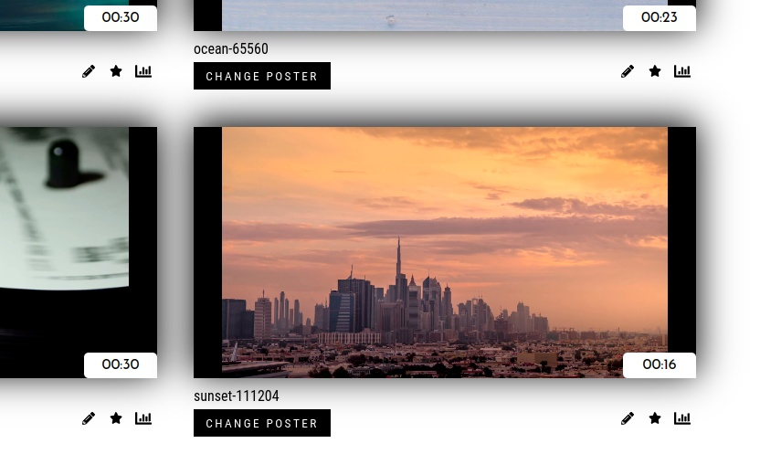
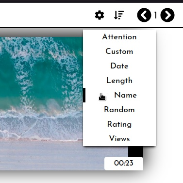
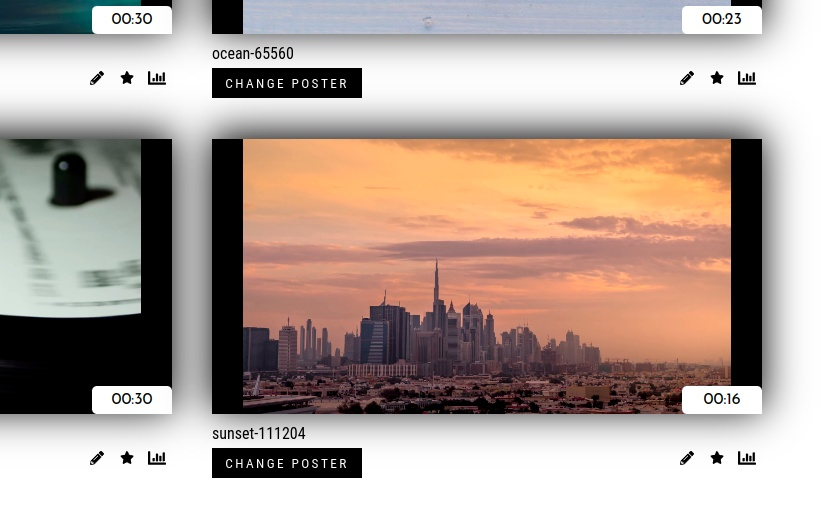
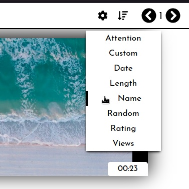
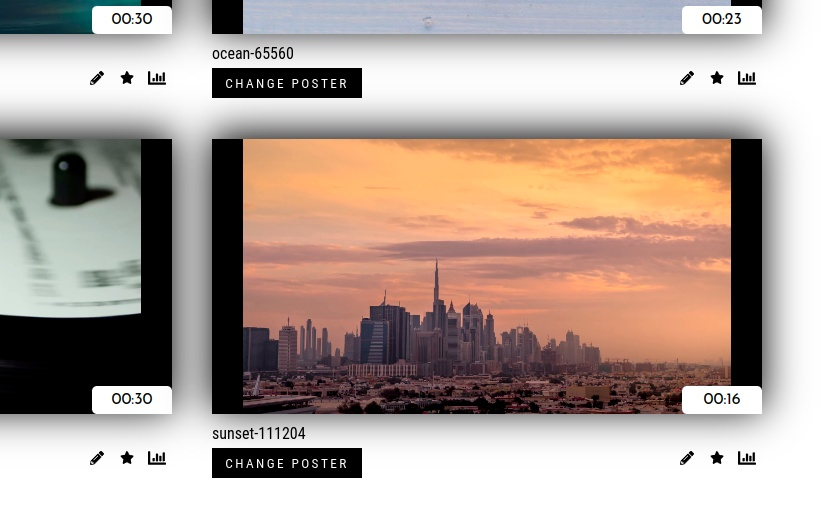
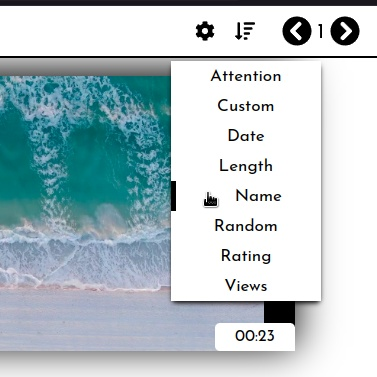

Try Lanstreamer today and take your offline video streaming experience to the next level!
 



Try Lanstreamer today and take your offline video streaming experience to the next level!


Lanstreamer is the ultimate solution for organizing and viewing your offline video collection. With Lanstreamer, you can create thumbnails and sort your videos by name, date, or length. Plus, Lanstreamer lets you preview your videos simply by hovering your mouse over the thumbnail, so you can quickly and easily find the video you're looking for.